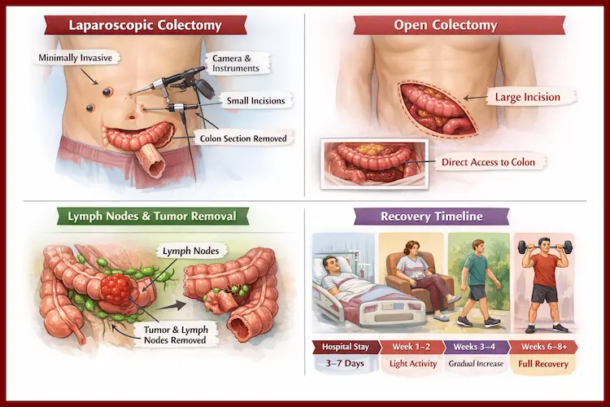
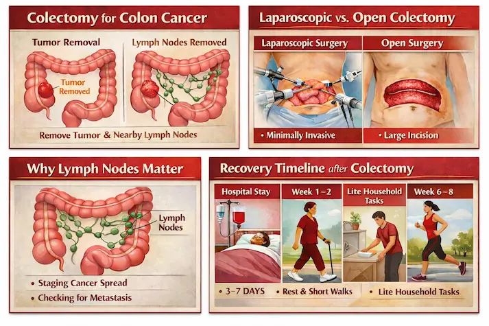
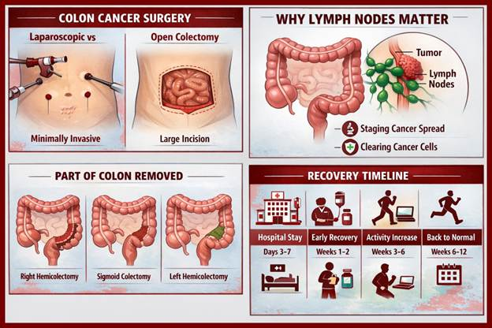
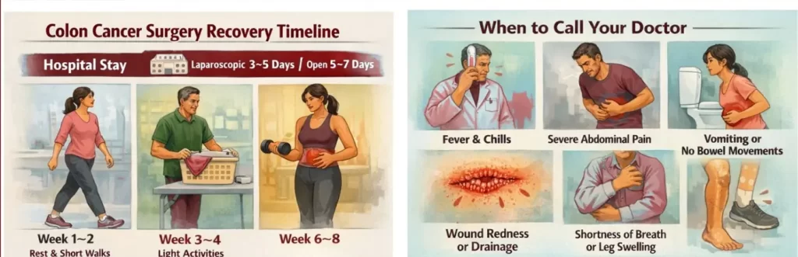

Hearing the words “colon cancer surgery” can feel overwhelming—especially when you’re trying to understand what exactly will be removed, how the operation is done, and how long recovery takes .
Colon Cancer Surgery 101: Laparoscopic vs Open Colectomy, Lymph Nodes & Recovery Timeline
Important note: This blog is for general education and doesn’t replace medical advice. Your plan depends on tumor location, stage, fitness for surgery, and your surgeon’s assessment.
What is a colectomy (and why it’s done for colon cancer)?
A colectomy means removing a section of the colon (large intestine). In colon cancer, surgery aims to remove:
- The tumor-bearing segment of colon with safe margins, and
- The lymph nodes and blood supply connected to that segment (because cancer cells can travel there).
This “tumor + drainage area” removal is what makes colon cancer surgery different from simply cutting out a small spot—it’s designed to be oncologically complete.
Depending on tumor location, the surgery might be called:
- Right hemicolectomy (right side of colon)
- Left hemicolectomy (left side)
- Sigmoid colectomy (lower left colon)
- Extended resections (if the tumor is near a junction or larger in spread)
After removing the diseased part, the surgeon usually reconnects the bowel ends, called an anastomosis.
Laparoscopic vs Open Colectomy: What’s the difference?

1) Laparoscopic colectomy (minimally invasive)
How it’s done: Several small cuts are made. A camera and instruments are inserted to perform the surgery inside the abdomen. The removed colon segment is taken out through a slightly larger incision.
Common benefits (when appropriate):
- Less pain after surgery (often)
- Smaller scars
- Faster return of bowel function in many cases
- Shorter hospital stay for many patients
- Earlier mobility and return to normal activities
Potential limitations:
- Not always suitable if there’s a large tumor, extensive adhesions from past surgery, severe obesity, perforation, bowel obstruction, or locally advanced disease stuck to nearby organs.
- Sometimes surgeons begin laparoscopically and convert to open for safety—this is a medical decision, not a failure.
2) Open colectomy
How it’s done: One larger incision is made to access the colon directly.
When it may be preferred or necessary:
- Emergency situations (perforation, severe obstruction, uncontrolled bleeding)
- Very advanced or bulky tumors
- Complex anatomy or dense scar tissue
- Need for multi-organ removal or more extensive reconstruction
Is laparoscopic “as good as” open for cancer?
For many patients with resectable colon cancer, laparoscopic surgery can achieve similar cancer outcomes when performed by experienced teams using proper oncologic techniques. The most important factor isn’t the number of incisions—it’s whether the operation achieves a complete cancer removal with proper margins and lymph node clearance.
Why lymph nodes matter (a lot)

What are lymph nodes?
Lymph nodes are small, bean-shaped filters that are part of the immune system. Cancer cells can travel from a colon tumor into nearby lymph nodes.
Why do surgeons remove them?
Lymph node removal serves two major purposes:
- Accurate staging
After surgery, a pathologist examines the colon specimen and the lymph nodes. If cancer is found in nodes, it typically indicates a higher stage (often Stage III), which can change treatment recommendations (like chemotherapy). - Better cancer clearance
Removing nodes in the drainage area reduces the chance of leaving behind microscopic disease.
How many lymph nodes should be examined?
Clinicians often aim for an adequate lymph node yield to stage the disease reliably. (You may hear benchmarks like “at least 12 nodes” discussed in many settings.) What matters most is that the surgeon removes the correct tissue package and the pathology evaluation is thorough—some patients naturally have fewer visible nodes, and prior treatments or individual anatomy can affect counts.
Tip: Ask for your final pathology report details: tumor size, grade, margins, lymphovascular invasion, number of nodes examined, and number positive.
Recovery timeline: What to expect (realistic milestones)
Recovery varies based on age, fitness, nutrition, other illnesses (diabetes, heart/lung issues), the surgery type, and whether complications occur. Many hospitals follow ERAS principles (Enhanced Recovery After Surgery) to speed safe recovery.
Hospital phase (Day 0 to Day 5–7)
Day 0 (surgery day)
- Pain control begins (often with multimodal meds)
- Early sips of fluids may start, depending on your case
- You may be encouraged to sit up the same day
Day 1–2
- Walking (multiple short walks) is strongly encouraged
- Diet may advance from liquids to soft foods based on bowel function
- Most patients have IV fluids reduced as oral intake improves
Day 2–4
- Passing gas is a key sign bowel function is returning
- Some patients have a bowel movement before discharge, others after
- Drains (if placed) may be removed
- Discharge planning begins when pain is controlled on oral meds, you’re walking, eating, and stable
Typical hospital stay (approximate):
- Laparoscopic: often ~3–5 days
- Open: often ~5–7 days
(These ranges vary widely across patients and hospitals.)
Home recovery (Week 1–2)
- Expect fatigue and reduced stamina
- Short daily walks help prevent clots and improve bowel function
- Appetite may be low; small frequent meals often work better
- Bowel habits can be irregular (looser stools, urgency, or constipation)
Wound care: Keep incisions clean and dry; follow surgeon instructions. Mild bruising or pulling sensations can be normal, but worsening redness, pus, or fever isn’t.
Weeks 3–4
- Many patients increase walking distance and return to light household tasks
- Pain usually decreases significantly
- Desk work may be possible for some, depending on job demands
Weeks 4–6
- A common checkpoint for returning to broader daily activities
- Lifting restrictions often continue (frequently no heavy lifting until cleared)
- Open surgery patients may need longer before full comfort returns
Weeks 6–12
- Gradual return toward normal stamina
- If chemotherapy is recommended (often based on stage/pathology), planning or initiation may occur after surgical recovery—timing depends on healing and medical readiness.

Common concerns (and when to seek urgent help)
Call your surgical team urgently if you have:
- Fever, chills, or worsening abdominal pain
- Persistent vomiting or inability to keep fluids down
- Increasing redness, swelling, discharge, or opening of the wound
- No gas/stool with significant bloating and pain
- Heavy rectal bleeding
- Chest pain, shortness of breath, or calf swelling (possible clot)
Smart questions to ask your surgeon
- Am I a candidate for laparoscopic surgery? If not, why?
- What type of colectomy will I have (right/left/sigmoid)?
- Will you reconnect the bowel the same day? What are the risks of leak?
- How many lymph nodes do you typically retrieve and examine?
- What will determine my final stage?
- When can I eat normally, drive, work, exercise, and lift weights?
- What symptoms should trigger an emergency call?
Final thought
The “best” colon cancer surgery is the one that safely removes the cancer completely, stages it accurately through lymph node evaluation, and supports a smooth recovery with the right postoperative plan. Understanding the approach and timeline upfront can turn fear into clarity—and help you prepare with confidence.
Have a question this article does not answer?
Send us your reports. A specialist reviews them before you travel, so the first visit begins with a plan rather than a repeat test.